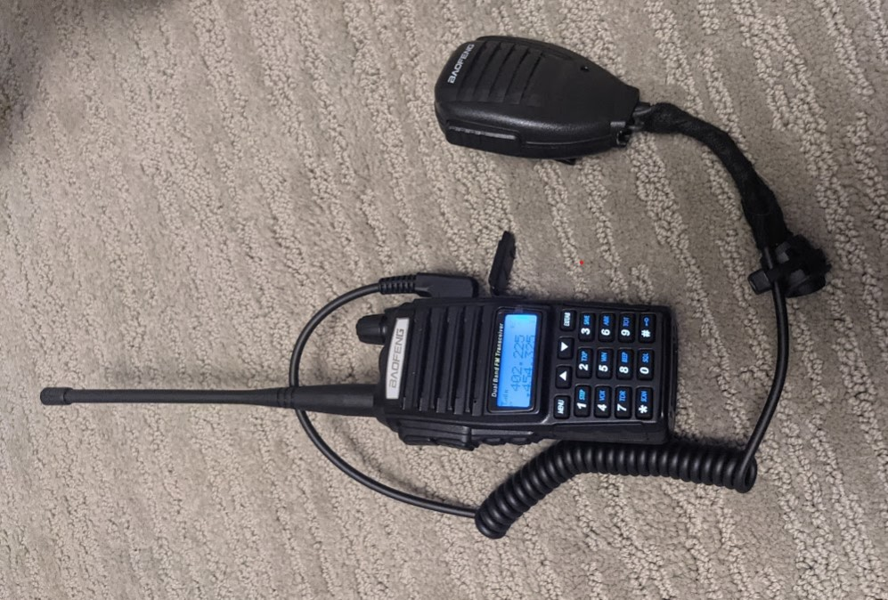

[06-14-2021] | UV-82 Speaker Mic Switch
I fulfilled my goal of getting a job in DevOps and leaving racing. I miss racing immensely, but don't miss the stress. Having weekends is great as well. Some of the guys at work have a 24 Hours of LeMons car, which was always a goal of mine to be a part of.

I bought a BaoFeng UV-82 radio for the pits, and wanted to still use the molded earpieces I have from my previous job. The radio came with a PTT speaker mic that also has a mono audio out port. Plugging headphones in outputs audio through both headphones and speakers, which is not ideal.
The solution is to wire a 2 way switch inline of the speaker so I can toggle it on and off, but still be able to use the mic. I was able to implement this with just random parts I had laying around. Parts used were:
This mod is as easy as desoldering the positive pin for the speaker and placing this switch in line of it. I cut a part of the rubber at the bottom where the audio port is to fit the wires and used a tywrap to hold it to the coiled cable.
The PCB can be seen here, and the 2 thicker gauge wires with heatshrink are the ones that I added. The cut I made in the gasket halfway through the middle is also visible.
Congratulations, now you've got toggleable speaker on your speaker mic!
HOME